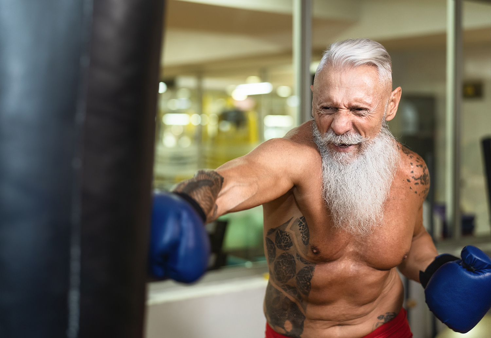

Resources
Links to informative websites and support groups on the topic of Male Breast Cancer Awareness
- Mayo Clinic
- HSE
- CDC
- NHS
- Male Breast Cancer.org
- Male Breast Cancer.ie
- Purple House Ireland
- Irish Times Article on Male Breast Cancer
- Nidirect Government Services
- Necret Ireland
- Cancer Ireland
- Indepedent Ireland Article on Male Breast Cancer
- Today FM Ireland Article on Male Breast Cancer
- Facebook page dedicated to spreading awareness on Male Breast Cancer
- Facebook forum on Male Breast Cancer
- The Blue Wave MBC facebook page